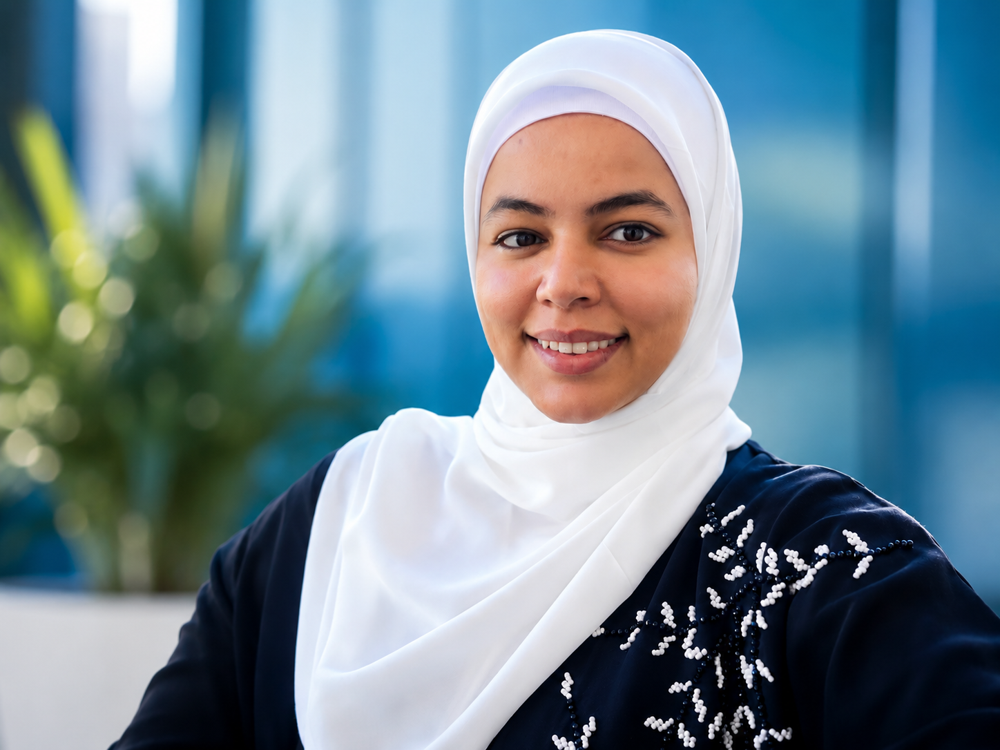

🧠
AI Research
NLP, machine learning, text mining and responsible AI research.
IT specialist, data analyst and STEM educator using artificial intelligence, research and technology to create meaningful impact.

I am a Palestinian IT professional and educator with experience in artificial intelligence, natural language processing, data analysis, robotics and science education. My work bridges research and practice, with a special interest in responsible technology and the visibility of Palestinian digital voices.
To use research, education and emerging technologies to empower communities and create measurable, ethical impact.
NLP, machine learning, text mining and responsible AI research.
Turning complex datasets into clear findings, metrics and decisions.
Hands-on learning with micro:bit, Scratch, Thymio and robotics kits.
Engaging science teaching for students in grades 7–10.
A cross-platform AI and NLP framework analysing Palestinian-related content on Facebook, Instagram and X from 2014–2025.
Discuss the ResearchMachine-learning comparison on the Wisconsin Breast Cancer dataset, with Logistic Regression reaching 98% accuracy.
Project-based courses for children using Thymio, micro:bit, Scratch and smart-city challenges.
Supervised the launch, setup and accessibility technology of an inclusive university lab.
Teaching science and life sciences for grades 7–10.
Teaching diploma courses, supervising labs and supporting academic research.
Delivering coding and robotics programmes for children and young learners.
Completed research in NLP, social media analysis and Palestinian digital expression.
I am open to research collaborations, technology projects, teaching opportunities and professional networking.
Connect on LinkedIn